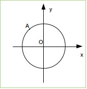

Si vous désirez animer les objets qui se trouvent dans une scène, il ne faut jamais oublier qu'une animation est une succession très rapide d'image fixe (comme pour un dessin animé). Pour "animer" un objet, il suffit de modifier un des paramètres de l'objet à chaque image. Comment modifier un paramètre à chaque image ? En plaçant cette modification dans la boucle de jeu "engine.runRenderLoop".
Créer une nouvelle application (app_10)
script.js
var canvas = document.getElementById("renderCanvas");
var engine = new BABYLON.Engine(canvas, true);
var scene = new BABYLON.Scene(engine);
var camera = new BABYLON.ArcRotateCamera("Camera",0, Math.PI/4, 15, new BABYLON.Vector3(0, 0, 0), scene);
var light = new BABYLON.PointLight("Omnidir", new BABYLON.Vector3(10, 0, 10), scene);
var boite= new BABYLON.Mesh.CreateBox("box_1",3,scene);
engine.runRenderLoop(function () {
boite.rotation.y=boite.rotation.y+0.05;
scene.render();
});
Analyser et tester cette application
Analyse de l'app_10 :
Ce code ne présente aucune difficulté : à chaque image, la valeur de "boite.rotation.y" augmente de 0,05 radian.
N.B. Il est souvent judicieux de regrouper tout ce qui concerne l'animation d'un objet dans une fonction et d'appeler cette fonction dans la boucle de jeu "engine.runRenderLoop"
On pourra donc privilégier le code suivant :
var canvas = document.getElementById("renderCanvas");
var engine = new BABYLON.Engine(canvas, true);
var scene = new BABYLON.Scene(engine);
var camera = new BABYLON.ArcRotateCamera("Camera",0, Math.PI/4, 15, new BABYLON.Vector3(0, 0, 0), scene);
var light = new BABYLON.PointLight("Omnidir", new BABYLON.Vector3(10, 0, 10), scene);
var boite= new BABYLON.Mesh.CreateBox("box_1",3,scene);
function animationBoite(){
boite.rotation.y=boite.rotation.y+0.05;
}
engine.runRenderLoop(function () {
animationBoite();
scene.render();
});
Pour l'instant, cela ne change pas grand chose, mais cela aura son utilité (clarté du code) avec des programmes plus complexes.
Dans les jeux vidéos (ou dans les simulations), il est souvent indispensable d'introduire la notion de temps. Tout se passe comme si nous déclenchions un chronomètre au début de l'exécution du programme, pour cela il suffit d'introduire une variable "temps" et d'incrémenter cette variable temps à chaque image.
Si l'on part du principe que nous avons un FPS de 30 images par seconde, il faut donc incrémenter notre variable temps de 1/30 de seconde à chaque image.
Créer une nouvelle application (app_11)
script.js
var temps=0;
var vAngle=1;
var canvas = document.getElementById("renderCanvas");
var engine = new BABYLON.Engine(canvas, true);
var scene = new BABYLON.Scene(engine);
var camera = new BABYLON.ArcRotateCamera("Camera",0, Math.PI/4, 15, new BABYLON.Vector3(0, 0, 0), scene);
var light = new BABYLON.PointLight("Omnidir", new BABYLON.Vector3(10, 0, 10), scene);
var boite= new BABYLON.Mesh.CreateBox("box_1",3,scene);
function animationBoite(){
boite.rotation.y=vAngle*temps;
}
engine.runRenderLoop(function () {
temps=temps+1/30
animationBoite();
scene.render();
});
Analyser et tester cette application
L'introduction d'une variable temps va nous permettre d'utiliser ce que l'on appelle en physique des équations horaires.
Par exemple, pour la rotation d'un objet, on trouve l'équation horaire suivante : α = ω.t (avec α l'angle, ω la vitesse angulaire en radian par seconde et t le temps), d'où le "boite.rotation.y=vAngle*temps;" (avec "boite.rotation.y" à la place de α, "vAngle" à la place de ω et "temps" à la place de t).
Nous sommes parties du principe que le nombre d'images par seconde sera de 30, or, rien n'est moins sûr, si par exemple votre scène se complexifie, le FPS risque de chuter : quelle en serait alors la conséquence pour le "chronomètre interne" de notre programme ?
Le temps doit s'écouler toujours "à la même vitesse" quel que soit le nombre d'images par seconde. Nous voici confrontés à un véritable problème : la méthode employée dans l'app_11 n'est donc pas satisfaisante.
La méthode "getDeltaTime()" donne le temps écoulé depuis le dernier rendu d'image. Au lieu d'avoir "temps=temps+1/30", nous aurons "temps=temps+engine.getDeltaTime()/1000"
Attention : "engine.getDeltaTime()" renvoie une valeur en milliseconde, il faut donc diviser cette valeur par 1000 pour obtenir un temps en seconde.
Modifier app_11 en remplaçant "temps=temps+1/30" par "temps=temps+engine.getDeltaTime()", puis tester cette modification.
Créer une nouvelle application (app_12)
Vous allez écrire un programme permettant de simuler l'orbite (circulaire) d'une planète autour d'une étoile. Tous les éléments visuels (lumière(s), position de la caméra,...) sont laissés à votre libre choix.
Pour vous aider :
Soit le point A de coordonnées x et y
À décrira un cercle ayant pour rayon r et pour centre O si à tout instant :
x = r . sin (ω.t)
y = r . cos (ω.t)
avec ω la vitesse angulaire (vitesse de rotation en radian par seconde) et t la variable temps.
En JavaScript, il faudra utiliser "Math.sin()" pour le sinus et "Math.cos()" pour le cosinus (exemple : "Math.sin(vAng*temps)").
Créer une nouvelle application (app_13)
Votre scène devra comporter une sphère et un "sol" (plan), la sphère étant au-dessus du sol. La sphère devra chuter vers le sol.
Il est possible de simuler à peu près fidèlement la chute d'une sphère. En effet, les objets ne tombent pas à vitesse constante (si on ne tient pas compte des frottements).
Voici l'équation qui donne l'altitude d'un objet en fonction du temps t :
y= -½ x g x t² + y0 (x représente le signe de la multilication).
avec y l'altitude de l'objet (y est positif), g est l'intensité de la pesanteur (normalement 9,8 N/Kg, mais dans BabylonJS, je vous conseille de prendre une valeur inférieure), y0 est l'altitude de l'objet à t = 0
Créer une nouvelle application (app_14)
La sphère passe au travers du sol, modifier votre code pour que la sphère s'arrête au niveau du sol.
Il est possible de détecter la collision entre 2 objets grâce à la méthode "intersectsMesh" :
objet1. intersectsMesh(objet2,true);
Si "objet1" entre en contact avec "objet2" (ou vis versa) la méthode "intersectsMesh" renverra true (sinon elle renverra false). Quand le deuxième paramètre de la méthode est à true, la détection des collisions est plus précise (mais aussi plus gourmande en terme de calculs).
Créer une nouvelle application (app_15)
Modifier le code développé dans l'app_14 pour que la sphère disparaisse 2 secondes après avoir touché le sol.
Pour vous aider :
La méthode "dispose"
sphere.dispose()
permet de supprimer un objet (ici l'objet "sphere").
La méthode "setTimeout" vous permet d'exécuter une fonction après un certain délai :
window.setTimeout(function(){
//cette fonction sera exécutée après un délai de 2 secondes
},2000)
Attention :
pour éviter d'avoir des problèmes, veillez à rajouter, juste avant la ligne "engine.runRenderLoop", les 2 lignes suivantes :
sphere.computeWorldMatrix(true);
plan.computeWorldMatrix(true);
Ces 2 lignes "obligent" BabylonJS à effectuer certains calculs avant le rendu de la première image.